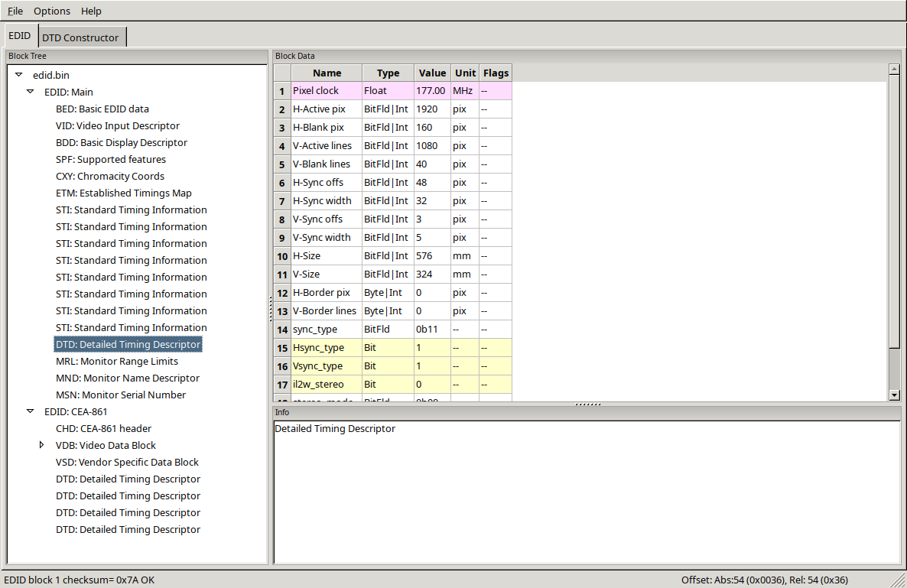

Первые шаги#
Настройка pacman#
Обновление ключей Arch Linux#
Обновление ключей необходимо во избежание дальнейших проблем с установкой пакетов:
sudo pacman-key --init # Инициализация
sudo pacman-key --populate archlinux # Получить ключи из репозитория
sudo pacman-key --refresh-keys # Проверить текущие ключи на актуальность
sudo pacman -Sy # Обновить ключи для всей системы
Данная операция может занять продолжительное время.
Включение 32-битного репозитория#
Убедимся, что конфигурация пакетного менеджера Pacman настроена для получения доступа к 32-битным зависимостям, нужным в частности для установки Wine и Steam.
Для этого раскомментируем так называемый multilib репозиторий:
sudo nano /etc/pacman.conf # Раскоментируйте последние две строчки как на скриншоте

sudo pacman -Suy # Обновление репозиториев и всех программ (пакетов)
Ускорение обновления системы#
Утилита Reflector отсортирует доступные репозитории по скорости:
sudo pacman -S reflector rsync curl # Установка reflector и его зависимостей
Если вы из Европейской части России, то всегда советуем использовать зеркала Германии, так как их больше всего и они имеют оптимальную свежесть/скорость:
sudo reflector --verbose --country 'Germany' -l 25 --sort rate --save /etc/pacman.d/mirrorlist
Если вы проживаете не на территории Европейской части РФ или в иной стране, то просто измените Germany на Russia или ваше государство.
Можно также вручную отредактировать список зеркал, добавив туда зеркала из постоянно обновляющегося перечня на сайте Arch Linux (https://archlinux.org/mirrorlist/)
sudo nano /etc/pacman.d/mirrorlist # Рекомендуем прописывать зеркала от Яндекса
Установка базовых пакетов и набора программ#
Автор считает, что пользователь системы должен сам определять, что и для чего он должен тащить в свою систему, но все же мы должны дать несколько рекомендаций к установке определенного ПО, которые точно поможет вам при работе с данным руководством.
Обязательные к установке пакеты!#
Эта группа пакетов ОБЯЗАТЕЛЬНА к установке! Она содержит ряд полезных
инструментов без которых вы не сможете установить множество пакетов из AUR, включая
все те, о которых пойдет речь далее в руководстве. И так как в начале руководства
мы условились пользоваться "дедовским" методом установки AUR пакетов, дополнительно
установим git для скачивания PKGBUILD и текстовый редактор nano для редактирования
конфигурационных файлов (вы так же в праве использовать любой другой):
sudo pacman -S base-devel git nano
По желанию можете установить графическую обертку для работы с загрузчиком GRUB2:
sudo pacman -S grub-customizer
Пакеты для работы с архивами#
В Linux есть поддержка целого зоопарка различных архивов и алгоритмов их сжатия, но чтобы все они работали правильно необходима установка дополнительных пакетов:
# zip, rar, ace, rzip/lcma/lzo, iso
sudo pacman -S lrzip unrar unzip unace p7zip squashfs-tools
Но они предоставляют только интерфейс командной строки для работы с архивами, потому стоит так же поставить графическую обертку с минимальным набором зависимостей:
sudo pacman -S file-roller
Набор прикладного ПО#
Далее мы установим набор джентельмена в виде браузера (chromium), плеера (VLC) и торрент-клиента (qbittorrent):
sudo pacman -S qbittorrent chromium vlc
Банально, но всё же.
Вдобавок можно отметить легковесный файловый менеджер PCManFM:
sudo pacman -S pcmanfm-gtk3 gvfs
Итак, мы установили набор джентльмена и парочку программ, что понадобятся нам в дальнейшем. Но если вас не устраивает тот или иной компонент, вы всегда можете найти любой нужный вам пакет по адресу https://www.archlinux.org/packages/. Если вы не смогли найти нужную вам программу в официальных репозиториях, вы всегда можете найти всё что душе угодно в AUR (по адресу https://aur.archlinux.org/packages/).
Установка актуальных драйверов для видеокарты#
В установке драйверов для Linux-систем нет ничего сложного, главное просто учитывать, что от свежести ядра и версии драйвера, будет зависеть получите ли вы чёрный экран смерти или нет (Шутка).
И да, устанавливайте драйвера ТОЛЬКО через пакетный менеджер вашего дистрибутива!
Забудьте про скачивание драйвера с сайта NVIDIA/AMD, это поможет вам избежать кучу проблем в дальнейшем.
NVIDIA#
В гайде мы установим драйвер версии DKMS, который сам подстроится под нужное ядро и не позволит убить систему при обновлении (не касается свободных драйверов Mesa).
Перед установкой рекомендуется отключить "Secure Boot" в UEFI, ибо из-за этого модули драйвера могут не загрузиться.
sudo pacman -S nvidia-dkms nvidia-utils lib32-nvidia-utils nvidia-settings vulkan-icd-loader lib32-vulkan-icd-loader lib32-opencl-nvidia opencl-nvidia libxnvctrl
sudo mkinitcpio -P # Обновляем образы initramfs
Nouveau (Только для старых видеокарт)#
Для старых видеокарт Nvidia (ниже GeForce 600) рекомендуется использовать свободную альтернативу драйвера NVIDIA — Nouveau, входящую в состав Mesa. Она имеет официальную поддержку и обновления в отличии от старых версий закрытого драйвера NVIDIA (340, 390) и отлично справляется с 2D ускорением. Вдобавок, Nouveau хорошо работает с Wayland.
sudo pacman -S mesa lib32-mesa xf86-video-nouveau vulkan-icd-loader lib32-vulkan-icd-loader
AMD#
sudo pacman -S mesa lib32-mesa vulkan-radeon lib32-vulkan-radeon vulkan-icd-loader lib32-vulkan-icd-loader
Intel#
sudo pacman -S mesa lib32-mesa vulkan-intel lib32-vulkan-intel vulkan-icd-loader lib32-vulkan-icd-loader
Данные команды выполнят установку полного набора драйверов для вашей видеокарты и всех зависимостей, но внимание: автор использует проприетарный драйвер NVIDIA, поэтому если вы заметили ошибку или желаете более проверенный источник: GitHub.
Внимание
У авторов отсутствует оборудование AMD, поэтому в данном руководстве основной акцент будет сделан именно на настройке оборудования от компании NVIDIA. Если у вас есть желание дополнить это руководство специфичными для открытых драйверов Mesa твиками/оптимизациями, вы можете отправить нам свои изменения в качестве Pull Request'a на рассмотрение.
Добавление важных модулей в образы initramfs#
Прежде чем мы начнем, необходимо добавить важные модули в загрузочный образ нашего ядра. Это позволит нам избежать проблем в дальнейшем, и снизить риск словить "чёрный экран" при загрузке из-за того что какие-либо модули не были подгружены во время или просто отсутствуют.
Для этого отредактируем параметры сборки наших образов: sudo nano /etc/mkinitcpio.conf
Отредактируйте строку MODULES как показано на изображении и выполните команды ниже.
В массив (ограничен скобками) вы можете прописать любые модули ядра которые считаете наиболее важными и нужными. Ниже мы указали модули файловой системы Btrfs.
Если у вас видеокарта от AMD/Intel, то можно прописать дополнительно указать модули соответствующих драйверов AMD/Intel: amdgpu radeon или crc32c-intel intel_agp i915.
Так же если у вас другая файловая система, то прописывать модули для Btrfs не нужно.
MODULES=(crc32c libcrc32c zlib_deflate btrfs)

sudo mkinitcpio -P # Пересобираем образы initramfs.
Установка микрокода#
Микрокод - программа реализующая набор инструкций процессора. Она уже встроена в материнскую плату вашего компьютера, но скорее всего вы его либо не обновляли вовсе, либо делаете это не часто вместе с обновлением BIOS (UEFI).
Однако у ядра Linux есть возможность применять его обновления прямо во время загрузки. Обновления микрокода содержат множественные исправления ошибок и улучшения стабильности, поэтому настоятельно рекомендуется их периодически устанавливать.
Осуществляется это следующими командами:
sudo pacman -S intel-ucode # Установить микрокод Intel
sudo pacman -S amd-ucode # Установить микрокод AMD
sudo mkinitcpio -P # Пересобираем образы initramfs.
sudo grub-mkconfig -o /boot/grub/grub.cfg # Обновляем загрузчик, можно так же через grub-customizer.
Настройка драйвера NVIDIA#
После установки драйвера обязательно перезагрузитесь, откройте панель nvidia-settings, и выполните все шаги как показано на изображениях:
nvidia-settings # Открыть панель Nvidia

(Если у вас больше одного монитора, то выбирайте здесь тот, который имеет большую частоту обновления)

(Это изменение профиля питания видеокарты работает только до перезагрузки. Если вы хотите зафиксировать профиль производительности, то установите пакет nvidia-tweaks с параметром _powermizer_scheme=1, как описано в следующем подразделе.)

(Не забудьте здесь настроить все мониторы которые у вас есть, задать им правильное разрешение и частоту обновления.)
Внимание
Советуем вам не использовать параметры "Force composition Pipeline" и "Force Full composition Pipeline". Несмотря на то, что эти два параметра действительно могут полностью вылечить тиринг (разрывы экрана), они также создают сильные задержки ввода (input lag). Вместо этого рекомендуем вам выполнить настройку композитора вашего DE (WM) как это описано в разделе "Оптимизация рабочего окружения (DE)".

Теперь переместите ранее сохраненый файл настройки в /etc/X11/xorg.conf, чтобы примененные вами настройки для мониторов работали для всей системы и не слетали после перезагрузки:
sudo mv ~/xorg.conf /etc/X11/xorg.conf
Внимание
Если вы используете GNOME/Plasma, то помните, что эти окружения могут игнорировать настройки для мониторов которые вы указали здесь, и использовать свои собственные. В этом случае настраивать мониторы нужно именно в настройках вашего рабочего окружения.
Твики драйвера NVIDIA#
По умолчанию в закрытом NVIDIA драйвере не используются некоторые скрытые оптимизации которые могут помочь с улучшением производительности и работоспособности видеокарты.
Поэтому, для того чтобы вы могли их активировать удобным способом, мы сделали пакет который включает в себя все эти твики для драйвера - nvidia-tweaks. Прежде чем устанавливать выполните установку самого драйвера NVIDIA как это было описано выше.
Установка
git clone https://aur.archlinux.org/nvidia-tweaks.git
cd nvidia-tweaks
nano PKGBUILD # В PKGBUILD вы можете найти больше опций для настройки, например настройку питания через PowerMizer
makepkg -sric
При возникновении следующей ошибки:
==> ОШИБКА: Cannot find the fakeroot binary.
==> ОШИБКА: Cannot find the strip binary required for object file stripping.
Выполните: sudo pacman -S base-devel
Специфические переменные окружения для драйвера NVIDIA#
Указать вы их можете либо в Lutris для конкретных игр, либо в "Параметрах Запуска" игры в Steam ("Свойства" -> "Параметры запуска". После указания всех переменных обязательно добавьте в конце "%command%", для того чтобы Steam понимал, что вы указали именно системные переменные окружения для запуска игры, а не параметры специфичные для этой самой игры).
__GL_THREADED_OPTIMIZATIONS=1 (По умолчанию выключено) - Активируем многопоточную обработку OpenGL.
Используете выборочно для нативных игр/приложений, ибо иногда может наоборот вызывать регрессию производительности.
Некоторые игры и вовсе могут не запускаться с данной переменной (К примеру, некоторые нативно-запускаемые части Metro).
__GL_MaxFramesAllowed=1 (По умолчанию - 2) - Задает тип буферизации кадров драйвером.
Можете указать значение "3" (Тройная буферизация) для большего количества FPS и улучшения производительности в приложениях/играх с VSync.
Мы рекомендуем задавать вовсе "1" (т.е. не использовать буферизацию, подавать кадры так как они есть).
Это может заметно уменьшить значение FPS в играх, но взамен вы получите лучшие задержки отрисовки и реальный физический отклик,
т.к. кадр будет отображаться вам сразу на экран без лишних этапов его обработки.
__GL_YIELD="USLEEP" (По умолчанию без значения) - Довольно специфичный параметр, "USLEEP" - снижает нагрузку на CPU и некоторым образом помогает в борьбе с тирингом,
а "NOTHING" дает больше FPS при этом увеличивая нагрузку на процессор.
Гибридная графика в ноутбуках#
Одной из самых больных проблем при использовании Linux на домашнем ноутбуке является гибридная графика. Конечно, в этой теме уже есть прогресс, и все не так плохо как кажется, но графическая подсистема по прежнему одна из самых (если не самая) проблемных частей любой Linux-системы.
Тема сложная и с кучей подводных камней, поэтому сначала разберемся с основными понятиями. Гибридная графика - это когда у вас есть два графических процессора, которые могут работать одновременно. Такая конфигурация чаще всего представлена в ноутбуках, когда есть интегрированный (т.е. встроенный, iGPU) в процессор видеочип и дискретная видеокарта (dGPU), которая превосходит встроенную по характеристикам и нацелена на использование в высокопроизводительных задачах.
Смысл такого разделения состоит в том, что мы можем использовать для малопрофильных задач встроенный видеочип, а когда появляется, так скажем, "рыба покрупнее", и нужно выдавать максимальный FPS - используем дискретную графику. На ноутбуках это позволяет сильно экономить энергию и, следовательно, повысить время своей работы.
Однако на практике такая система содержит много проблем. Главная из которых, это вопрос о том, как эти два GPU будут взаимодействовать между собой. И если в Windows эту проблему как-то решили, то в Linux к сожалению все не так просто. По итогу мы имеем несколько отдельных комбинаций производителей встроенных видеочипов и дискретной видеокарты. Вот три наиболее встречаемых случая (сначала встроенная графика, затем дискретная):
Intel + NVIDIA
AMD + NVIDIA
Intel + AMD
Самыми распространенными из них являются первый и второй случай. Они же самые проблемные.
Третий случай не должен вызывать у вас всяких проблем, ибо для обеих GPU могут использоваться
открытые драйвера Mesa, которые должны работать из коробки. Вам нужно будет лишь использовать
переменную окружения DRI_PRIME=1 чтобы форсировать использование дискретной графики для нужного
вам приложения. Например для игры в Steam вам достаточно в её свойствах указать DRI_PRIME=1 %command%.
Далее мы будем рассматривать только первые два случая, имеющие между собой один и тот же алгоритм действий.
Итак, есть две возможные стратегии при связке NVIDIA + Intel, либо NVIDIA + AMD:
Мы используем встроенный механизм работы с гибридной графикой драйвера NVIDIA
Мы уходим от гибридной графики, отключая один из возможных GPU и используем только дискретный/встроенный видеочип.
Прежде чем мы начнем рассматривать первый и второй план-капкан, стоит выполнить некоторые обязательные шаги, если вы хотите чтобы графика в вашем ноутбуке работала правильно.
Удостоверьтесь, что вы установили все драйвера правильно, как для встроенной видеокарты, так и для NVIDIA (обязательно для NVIDIA!)
Проверьте, правильно ли загружаются модули драйвера NVIDIA. Для этого выполните команду
lsmod | grep nvidia. Если вывод команды НЕ пустой, то все в порядке.Включите DRM KMS для драйвера NVIDIA. Сделать это можно двумя способами: добавить параметр ядра
nvidia-drm.modeset=1в конфигурацию вашего загрузчика, либо при помощи файла настройки. Создайте файл/etc/modprobe.d/nvidia.confи пропишите в него следующее:options nvidia_drm modeset=1. И да, обязательно выполните обновление образов ядра через команду sudo mkinitcpio -P! Не забывайте об этом пожалуйста. Кроме того, вы можете целиком пропустить данный шаг, если ранее установили пакет nvidia-tweaks.Отключите параметр
Secure Bootв настройках UEFI если вы ещё этого не сделали. Он может мешать загрузке драйвера NVIDIA.Установите утилиту XRandr:
sudo pacman -S xorg-xrandr
Теперь рассмотрим первый вариант, т. е. использование встроенного механизма работы с гибридной графикой. Как ни странно, но если вы имеете дискретную видеокарту NVIDIA, у которой есть поддержка версии драйвера выше 435, то все должно работать прямо из коробки. Просто вы можете об этом не догадываться.
Тем не менее, лучше все таки проверить, что все работает правильно, и вы можете сделать это через утилиту nvidia-prime:
sudo pacman -S nvidia-prime
prime-run glxinfo | grep "OpenGL renderer"
Если вывод последней команды даёт вам упоминание вашей дискретной видеокарты, значит вы всё сделали правильно. При возникновении проблем, советуем вам перепройти шаги указанные выше.
Вот и всё. Данный вариант ещё называют "Reverse PRIME" (обратный PRIME).
После этого у вас будет использоваться встроенная графика по умолчанию, а использовать дискретную графику
вы можете выборочно, указав перед командой запуска желаемой программы уже упомянутую команду prime-run.
Например: prime-run glxgears. Для игр в Steam добавляете команду в "Свойствах" игры: prime-run %command%.
В рабочем окружении GNOME, начиная с версии 3.36 есть дополнительный пункт в контекстном меню, который также позволяет
вам запускать приложения с использованием дискретной графики.
Предупреждение
Обращаем ваше внимание, что некоторые возможности дискретной графики в таком режиме несколько урезаны. Так, вы не сможете настроить ваши мониторы через nvidia-settings как это было указано в предыдущем разделе, ибо за подключение и обслуживание внешних мониторов отвечает встроенная графика. Исключается возможность разгона и ручного управления питанием дискретной видеокарты.
Теперь второй вариант. Его я могу порекомендовать всем тем, кто: а) не хочет возни и возможных проблем с предыдущем вариантом б) хочет получить максимальную производительность
По сути, здесь мы делаем все тоже самое, что и в прошлом в варианте, просто меняя
дискретную графику со встроенной местами. Для этого необходимо создать конфигурационный файл
sudo nano /etc/X11/xorg.conf.d/10-gpu.conf и прописать в него следующее:
Section "ServerLayout"
Identifier "layout"
Screen 0 "nvidia"
Inactive "intel"
EndSection
Section "Device"
Identifier "nvidia"
Driver "nvidia"
BusID "PCI:x:x:x" # Например: "PCI:1:0:0"
EndSection
Section "Screen"
Identifier "nvidia"
Device "nvidia"
Option "AllowEmptyInitialConfiguration"
EndSection
Section "Device"
Identifier "intel"
Driver "modesetting"
EndSection
Section "Screen"
Identifier "intel"
Device "intel"
EndSection
В полях "BusID" вы должны указать собственные значения PCI ID в том формате, в котором они указаны в примере.
Их вы можете узнать при помощи следующей команды: lspci | grep VGA (PCI ID будет первым набором цифр в строке).
Перезагружаемся, и снова смотрим выхлоп: glxinfo | grep "OpenGL renderer"
(в этот раз без nvidia-prime). У вас так же должно появиться упоминание
вашей дискретной видеокарты.
В этом случае вся графика будет на плечах дискретной видеокарты, благодаря чему достигается максимальная производительность и снимаются ряд ограничений (панель nvidia-settings должна прибавить в возможностях).
Стоит отметить, что всё, что мы проделали выше - работает только для версии драйвера 435.17 и выше. При использовании драйвера ниже этой версии у вас по умолчанию должна использоваться только дискретная графика (?).
Внимание
Да, многие на этом моменте могут сказать, что есть Bumblebee. Однако он признан морально устаревшим и более неподдерживаемым. Потому он имеет целый ряд проблем, в частности с производительностью. Автор не советует его использовать при любом раскладе. Лучше поиграться с частотами вашей дискретной видеокарты, дабы снизить энергопотребление.
Альтернатива попроще: optimus-manager#
Если вы не хотите разбираться в этой теме подробно, и хотите просто поставить и забыть, то есть специальный помощник в этом - optimus-manager, а также графическая обертка для него optimus-manager-qt.
Эта программа позволит вам быстро переключаться между различными режимами описанными выше и без танцев с бубном. Программа работает как для новых версий драйвера (выше 435.17), так и для старых (правда без гибридного режима).

Установка
Для правильной работы перед установкой выполните ряд шагов:
Вы должны использовать один из популярных менеджеров входа: LightDM, SDDM или GDM (подробнее о нем ниже).
Если ваше рабочее окружение это GNOME, то вам необходимо установить модифицированный пакет gdm-prime из AUR. Не забудьте отредактировать
sudo nano /etc/gdm/custom.confи добавить строкуWaylandEnable=falseчтобы форсировать отключение Wayland сессии. Напоминаю, что режим гибридной графики на данный момент не работает в Wayland. Совсем. Вообще.Полностью удалите
/etc/X11/xorg.confили удалите в нем все строки связанные с настройкой GPU. Optimus-manager использует собственные настройки Xorg для правильной работы всех доступных режимов.
Перейдем непосредственно к установке:
git clone https://aur.archlinux.org/optimus-manager.git # Скачивание исходников
cd optimus-manager # Переход в директорию
makepkg -sric # Сборка и установка
sudo systemctl enable optimus-manager.service # Запускаем службу
Дополнительно советуем установить графическую обертку:
git clone https://github.com/Shatur/optimus-manager-qt # Скачивание исходников
cd optimus-manager-qt # Переход в директорию
# Перед сборкой можете отредактировать PKGBUILD, заменив строку _plasma=false на _plasma=true.
# Это улучшит совместимость с Plasma (если вы её используете).
makepkg -sric # Сборка и установка
После этого перезагрузитесь и запустив optimus-manager-qt выполните переключение в нужный вам режим.
Разгон монитора (Для опытных пользователей)#
Вопреки мнению многих людей, в Linux таки возможно выполнить разгон монитора. Пусть и с небольшим количеством манипуляций мы попробуем это сделать в данном разделе для разных конфигураций оборудования.
Предупреждение
Описанные ниже способы не работают для Wayland сессий.
Для видеокарт AMD/Intel#
Данный способ работает только для драйверов Mesa и Xorg.
Установим все необходимые компоненты:
sudo pacman -S xorg-xrandr libxcvt
Для начала сгенерируем модельную линию, которая предоставляет Xorg серверу информацию о подключенном мониторе компьютера. Выполните следующую команду, где сначала указываете желаемое разрешение через пробел, а затем и желаемую частоту обновления:
cvt 1920 1080 75
Теперь зарегистрируем полученную модельную линию в Xorg через утилиту xrandr. Скопируйте выведенную cvt строку и вставьте все после Modeline в эту команду:
xrandr --newmode "1920x1080_75.00" 220.75 1920 2064 2264 2608 1080 1083 1088 1130 -hsync +vsync
Теперь применим полученный Modeline для нужного монитора:
xrandr --addmode HDMI-0 1920x1080_75.00
xrandr --output HDMI-0 --mode 1920x1080_75.00
(Где HDMI-0 - тип подключения вашего монитора, его можно узнать через команду xrandr без аргументов)
Теперь вы можете в таком порядке выполнять эти операции постепенно повышая частоту обновления монитора, и результат в виде модельной линии с максимальной рабочей частотой обновления добавить в файл настройки Xorg. Например:
sudo nano /etc/X11/xorg.conf.d/10-monitor.conf # Прописываем строчки ниже
Section "Monitor"
Identifier "VGA1" # Здесь указываем тип подключения вашего монитора
Modeline "1280x1024_60.00" 109.00 1280 1368 1496 1712 1024 1027 1034 1063 -hsync +vsync # Здесь указываем модельную линию которая у вас получилась
Option "PreferredMode" "1280x1024_60.00" # Здесь заменяем на название полученной модельной линии
EndSection
Section "Screen"
Identifier "Screen0"
Monitor "VGA1" # Здесь указываем тип подключения вашего монитора
DefaultDepth 24
SubSection "Display"
Modes "1280x1024_60.00" # Здесь меняем на название полученной модельной линии
EndSubSection
EndSection
Section "Device"
Identifier "Device0"
Driver "intel" # Здесь меняем на драйвер вашей видеокарты
EndSection
Внимание
Обратите внимание на комментарии в привиденном примере файла настройки!
После перезагрузки все настройки должны работать правильно.
Отдельным случаем стоит рассмотреть разгон матрицы ноутбука с графикой Intel. Об этом вы можете прочитать в данной статье.
Для видеокарт NVIDIA#
Сейчас мы будем рассматривать вопрос разгона монитора только для видеокарт NVIDIA, т. к. у этого производителя есть некоторые проблемы с применением модельных линий Xorg напрямую через XRandr.
Прежде всего, нужно узнать какой тип подключения у вашего монитора, сделать это можно при помощи утилиты xrandr:
sudo pacman -S xorg-xrandr # Установка
xrandr # Запуск
Из информации о наших мониторах, выводимой xrandr, нас интересует:
Тип подключения монитора который вы хотите разогнать (HDMI-0/DP-0 и т.д.)
Строчка с разрешением монитора для разгона. Необходимо чтобы рядом со значением его частоты обновления был знак звездочки (*). Это означает, что монитор способен выдавать большее количество Герц чем указано, т.е. его можно разогнать.
Затем переходим в панель управления NVIDIA X Settings:
sudo nvidia-settings
В ней нам нужно полностью настроить наш разгоняемый монитор с соответствующим типом подключения во вкладке "X Server Display Configuration". Задайте разрешение монитора и его частоту обновления согласно тем значениям, что нам вывел xrandr и сохраните все настройки в xorg.conf через кнопку снизу: "Save X Configuration File".
После этого переходим во вкладку с названием монитора который вы хотите разогнать. К примеру: "HDMI-0 - (Samsung S24R35x)". И жмакаем на кнопку "Acquire EDID..." -> И сохраняем EDID файл вашего монитора в домашнюю директорию (Это обязательный шаг, сохранять нужно только в домашнюю папку вашего пользователя).
Итак, теперь нам нужно отредактировать наш edid.bin файл монитора. Чтобы это сделать установим свободно распространяемую утилиту wxedid:
git clone https://aur.archlinux.org/wxedid.git # Скачивание исходников
cd wxedid # Переход в директорию
makepkg -sric # Сборка и установка
Запустив эту программу откроем через меню наш сохраненный edid файл.

Затем перейдем в "DTD: Detailed Timing Descriptor".
Здесь нужно переключится на вкладку "DTD Constructor", и в поле "Pixel clock" постепенно повышать частоту обновления монитора до необходимого значения.

О том, как найти нужное значение для вашего монитора - думайте сами и ищите на специализированных ресурсах. Для разных мониторов - разные значения.
Сохраняем уже измененный EDID файл (так же в домашнюю директорию) и закрываем программу.

Теперь в настройках Xorg нужно указать путь до измененного EDID файла в секции с тем монитором который мы разгоняем:
sudo nano /etc/X11/xorg.conf # Редактируем ранее сохраненный xorg.conf
И добавляем туда опцию с полным путем к измененному EDID файлу в таком формате:
Option "CustomEDID" "HDMI-0:/home/ваше_имя_пользователя/edid.bin"
(Где HDMI-0 - ваш тип подключения, а edid.bin ваш файл для разгона)
Все. Теперь нужно перезагрузиться и наслаждаться плавностью. (При условии что вы указали правильное значение).
Предупреждение
Пользователи с VGA подключением монитора (и не только) могут испытывать проблему с черным экраном после перезагрузки. Поэтому, просим вас заранее сделать себе флешку с записанным на нее любым LiveCD окружением, для того чтобы можно было откатить изменения в случае возникновения проблем.
Видео версия (Немного устарела)